C'est quoi OWASP ?
OWASP est une organisation à but non lucratif qui aide à rendre les applications web plus sûres. Elle publie gratuitement des guides et des outils. Sa liste la plus connue est le Top 10 des risques de sécurité.
Les 10 risques (édition 2025)
- A01 : Contrôle d'accès défaillant
- A02 : Mauvaise configuration de sécurité (risque choisi)
- A03 : Chaîne d'approvisionnement logicielle
- A04 : Failles cryptographiques
- A05 : Injection
- A06 : Conception non sécurisée
- A07 : Échecs d'authentification
- A08 : Intégrité des logiciels ou des données
- A09 : Journalisation et alertes insuffisantes
- A10 : Mauvaise gestion des situations exceptionnelles
A01 : le contrôle d'accès défaillant
Un utilisateur peut faire des choses qu'il n'a pas le droit de faire ou voir des informations qui ne sont pas pour lui.
Exemples
- Changer le numéro dans l'adresse d'une page pour voir le compte d'un autre
- Un utilisateur normal qui accède à la page administrateur
- Des fichiers privés accessibles avec un lien direct
Comment s'en protéger
- Vérifier les droits sur le serveur à chaque demande
- Tout refuser par défaut, puis autoriser au cas par cas
- Donner à chaque utilisateur seulement les droits dont il a besoin
Schéma
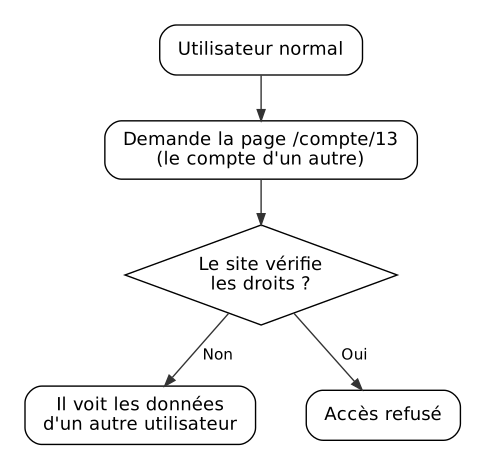
Risque choisi pour la présentation
A02 : la mauvaise configuration de sécurité
Une mauvaise configuration arrive quand un serveur ou une application est mal réglé. Le code peut être bon, mais un mauvais réglage laisse la porte ouverte aux attaquants.
Exemples
- Mot de passe par défaut jamais changé (admin / admin)
- Mode debug laissé actif sur le site en ligne
- Messages d'erreur qui montrent trop d'informations
- Dossiers du serveur visibles par tout le monde
Comment s'en protéger
- Changer tous les mots de passe par défaut
- Désactiver ce qui ne sert à rien
- Désactiver le mode debug en production
- Vérifier régulièrement la configuration
Schéma
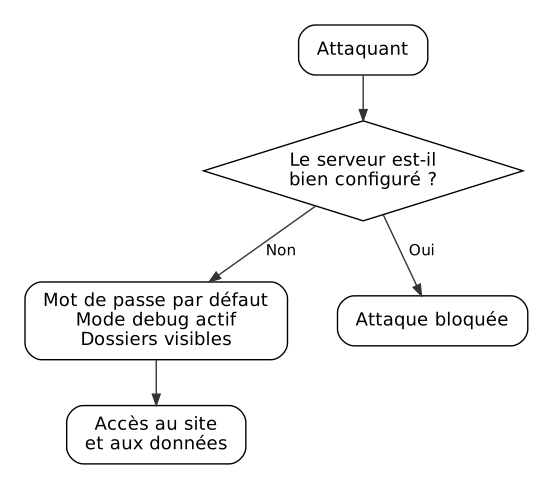
A03 : la chaîne d'approvisionnement logicielle
Un site utilise des bibliothèques et des outils venant d'ailleurs. Si l'un d'eux est piraté ou n'est plus à jour, le site devient vulnérable lui aussi.
Exemples
- Une bibliothèque populaire qui a été piratée
- Un composant ancien qui a une faille connue
- Un outil de développement compromis
Comment s'en protéger
- Mettre à jour régulièrement les composants utilisés
- Télécharger uniquement depuis des sources fiables
- Garder la liste de tout ce que le site utilise
Schéma
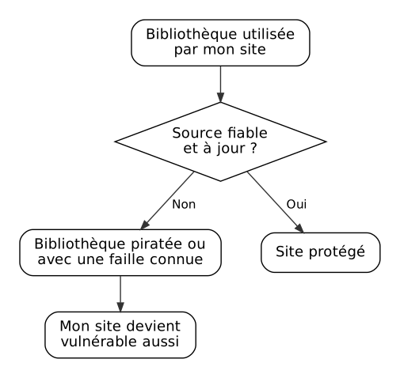
A04 : les failles cryptographiques
Les données sensibles ne sont pas assez bien protégées. Si quelqu'un les intercepte ou les vole, il peut les lire facilement.
Exemples
- Mots de passe enregistrés en clair dans la base de données
- Site en HTTP au lieu de HTTPS
- Chiffrement ancien et trop faible
Comment s'en protéger
- Utiliser HTTPS sur tout le site
- Ne jamais stocker un mot de passe en clair, mais le transformer avec un algorithme adapté
- Ne pas garder de données sensibles inutiles
Schéma
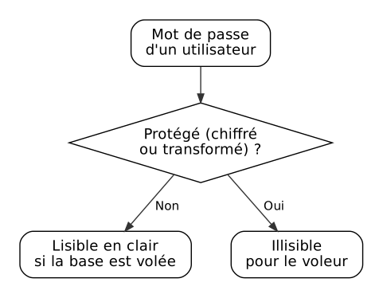
A05 : l'injection
Un attaquant écrit du code malveillant dans un champ du site, par exemple un formulaire. Si le site ne vérifie pas ce texte, il exécute ce code.
Exemples
- Injection SQL : du code écrit dans un formulaire de connexion pour entrer sans mot de passe
- Du code JavaScript caché dans un commentaire, qui s'exécute chez les autres visiteurs
- Une commande envoyée au serveur à travers un champ de texte
Comment s'en protéger
- Vérifier et nettoyer tout ce que l'utilisateur écrit
- Utiliser des requêtes préparées pour la base de données
- Ne jamais afficher du texte saisi sans le sécuriser
Schéma
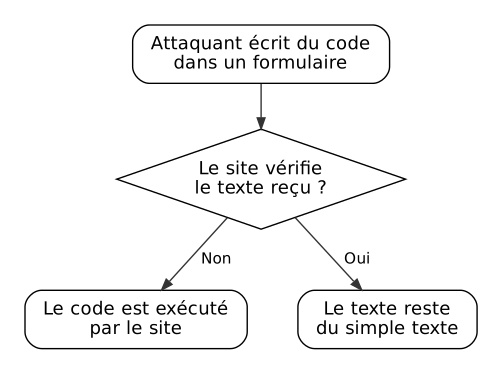
A06 : la conception non sécurisée
Le problème vient de la façon dont le site a été pensé, pas d'une erreur de code. Même un code parfait ne corrige pas une mauvaise idée de départ.
Exemples
- Aucune limite au nombre d'essais de mot de passe
- Une question secrète dont la réponse se devine facilement
- Un remboursement possible sans aucune vérification
Comment s'en protéger
- Penser à la sécurité dès le début du projet
- Imaginer comment un attaquant pourrait détourner chaque fonction
- Tester aussi les mauvais usages, pas seulement les bons
Schéma
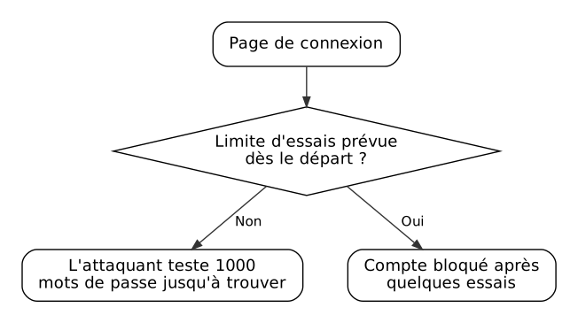
A07 : les échecs d'authentification
La connexion au site est mal protégée. Un attaquant peut se faire passer pour un autre utilisateur.
Exemples
- Mots de passe trop faibles acceptés, comme « 123456 »
- Pas de double authentification
- Session qui ne se ferme jamais, même après déconnexion
Comment s'en protéger
- Activer la double authentification
- Exiger des mots de passe solides
- Limiter le nombre d'essais de connexion
- Fermer les sessions après un certain temps
Schéma
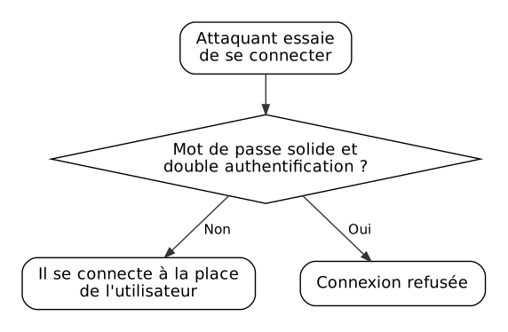
A08 : l'intégrité des logiciels ou des données
Le site fait confiance à des mises à jour ou à des données sans vérifier qu'elles n'ont pas été modifiées par quelqu'un d'autre.
Exemples
- Une mise à jour installée sans vérifier d'où elle vient
- Un script externe chargé sur le site sans aucun contrôle
- Des données envoyées au site que l'utilisateur peut modifier
Comment s'en protéger
- Vérifier la signature des mises à jour et des fichiers
- N'utiliser que des sources de confiance
- Contrôler les données reçues avant de les utiliser
Schéma
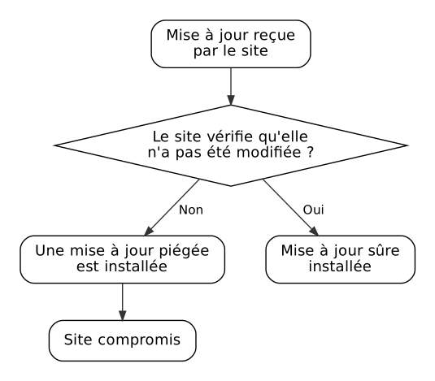
A09 : la journalisation et les alertes insuffisantes
Le site n'enregistre pas ce qui se passe et ne prévient personne en cas de problème. Une attaque peut durer longtemps sans être vue.
Exemples
- Les connexions ratées ne sont pas enregistrées
- Aucune alerte quand quelqu'un essaie 1000 mots de passe
- Des journaux qui existent mais que personne ne lit
Comment s'en protéger
- Enregistrer les événements importants (connexions, erreurs, actions sensibles)
- Mettre en place des alertes automatiques
- Garder les journaux un certain temps, sans y écrire de mots de passe
Schéma
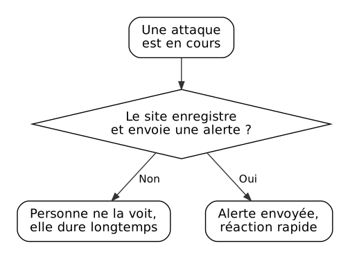
A10 : la mauvaise gestion des situations exceptionnelles
Le site gère mal les erreurs et les cas inattendus. Il peut planter, donner trop d'informations ou même laisser passer des personnes qui n'ont pas le droit.
Exemples
- Une erreur non prévue qui fait tomber tout le site
- Un message d'erreur qui montre le code ou la base de données
- En cas de problème, le système laisse l'accès ouvert au lieu de le bloquer
Comment s'en protéger
- Prévoir ce qui se passe quand une erreur arrive
- En cas de doute, refuser l'accès plutôt que l'autoriser
- Afficher des messages d'erreur simples à l'utilisateur
- Tester les cas inhabituels
Schéma
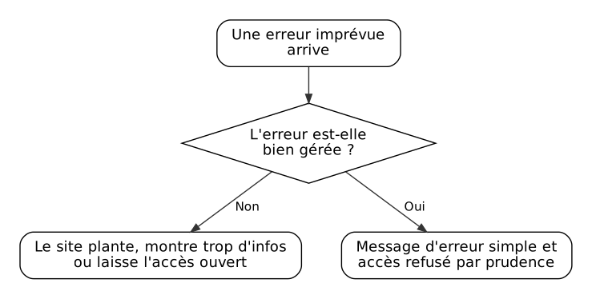
Schéma : la mauvaise configuration (A02)
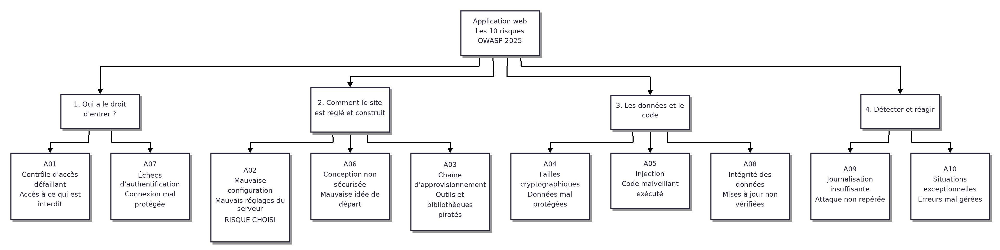
Source : OWASP Top 10